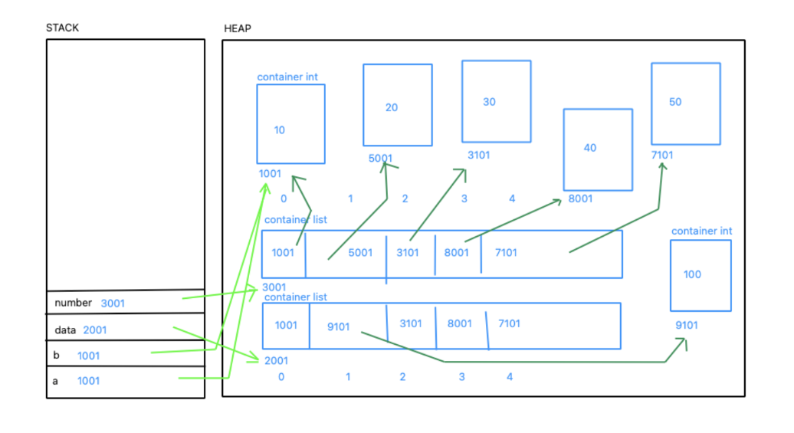
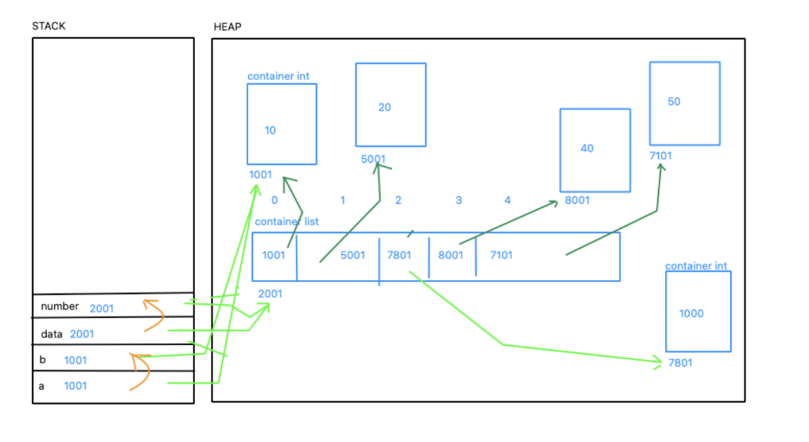
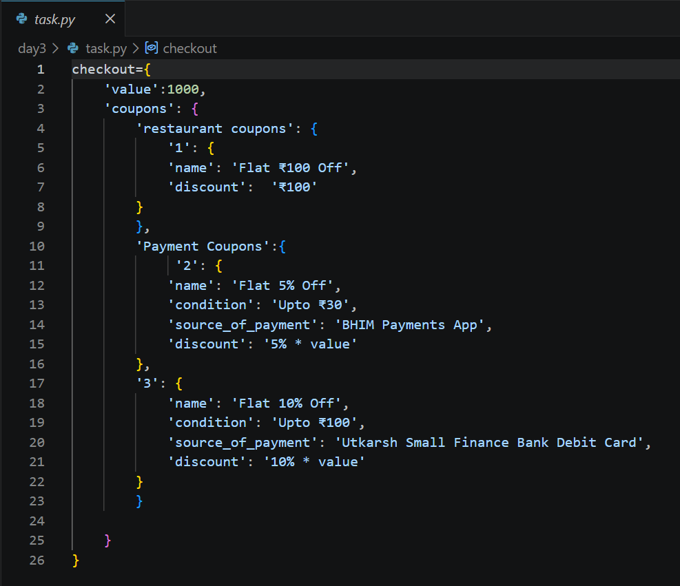

Date: 27 June 2026
Duration: 2:00 Hrs
Training Company: Auribises Technologies
Trainer: Ishant Kumar
Today's session focused on understanding how Python stores and manages data internally using various data structures. We explored hashing, lists, sets, dictionaries, reference copy operations, memory representation, and real-world data modelling using nested data structures.
The trainer demonstrated how Python handles memory allocation for immutable and mutable objects. We explored how variables act as references to objects stored in memory.

For immutable objects such as integers, Python may reuse the same memory object when multiple variables contain identical values.
a = 10 b = 10
Both variables can reference the same integer object in memory.
However, when two lists containing identical values are created, Python allocates separate list objects because lists are mutable.
data = [10,20,30,40,50] numbers = [10,20,30,40,50]
Although the contents are the same, the two variables reference different list objects stored in memory.
The trainer introduced the concept of hashing using an online hashing visualization tool. Hashing is a technique used to compute a hash value and map data into buckets for efficient storage and retrieval.
hash(x) = x % n
where:
We observed how different values are distributed among buckets and learned how hashing improves lookup performance.
The concept of hashing forms the foundation of Python Sets and Dictionaries.
The trainer explained the difference between storing a single value and storing multiple values together.
Lists, Sets, Tuples, and Dictionaries are examples of multi-value containers in Python.
We explored how Python stores list objects in memory and how reference variables point to objects stored in the heap. We also discussed the relationship between stack memory and heap memory.
One of the most important concepts covered today was reference copy operations.

When one variable is assigned to another variable containing a list, both variables refer to the same object in memory.
data = [10,20,30,40,50]
numbers = data
Modifying the list through one variable affects the other because both references point to the same memory location.
Sets are unordered collections that store unique values only. Duplicate values are automatically removed, and indexing is not supported because sets use hashing internally.
data = {10,20,30,50,10,20}
Dictionaries store data as key-value pairs and provide fast access using hashing.
students = {
101: "John",
201: "Fionna",
301: "Jennie"
}
We also learned how dictionaries can be nested to represent complex real-world information.
During the session, we were given a practical activity in which a coupon and checkout section of a food ordering application had to be represented using Python data structures.

I implemented the solution using nested dictionaries to represent order value, restaurant coupons, payment coupons, discount conditions, and payment methods.
This activity demonstrated how real-world application data can be modelled using Python dictionaries.
The assignment solutions were implemented separately and uploaded to the training code repository.
Today's session helped me understand how data is actually stored and managed inside Python. The practical examples involving reference copies, hashing, and nested dictionaries made it easier to visualize how real-world applications organize their data. The activity of modelling a coupon system using dictionaries was particularly useful because it connected programming concepts with real software systems.
The upcoming session is expected to continue exploring Python programming concepts and their application in software development and Agentic AI systems.